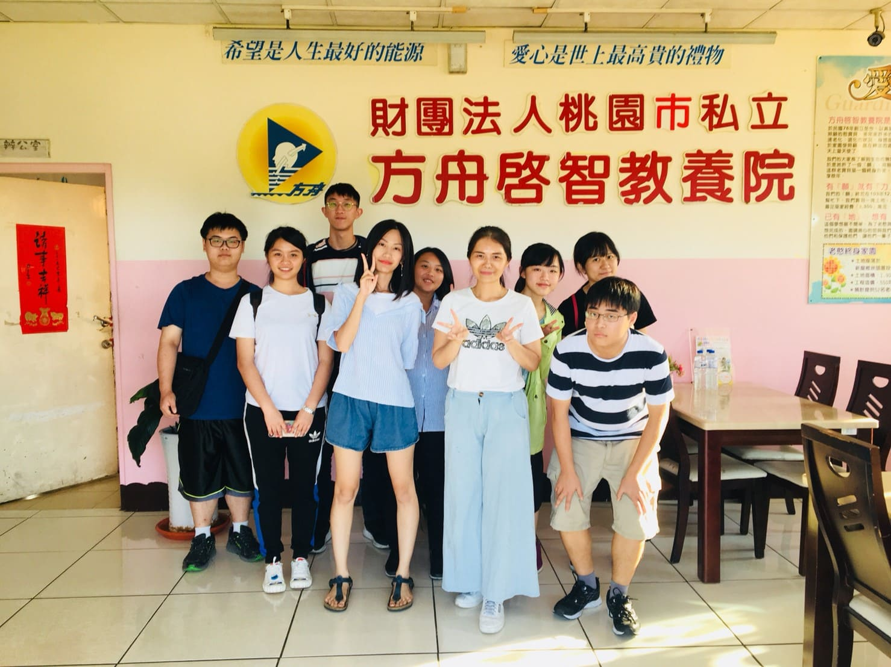
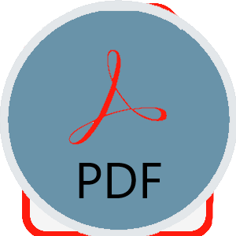
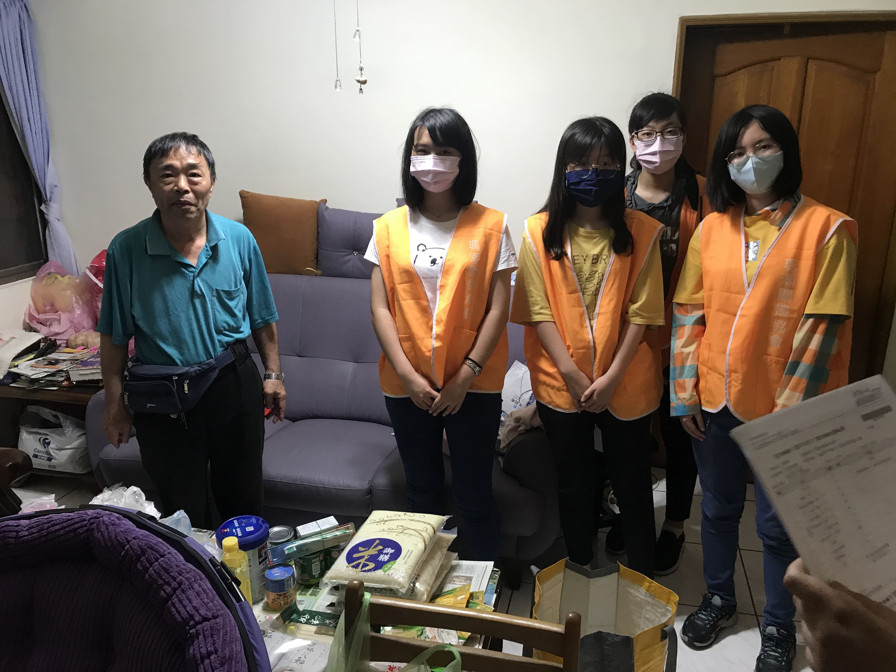
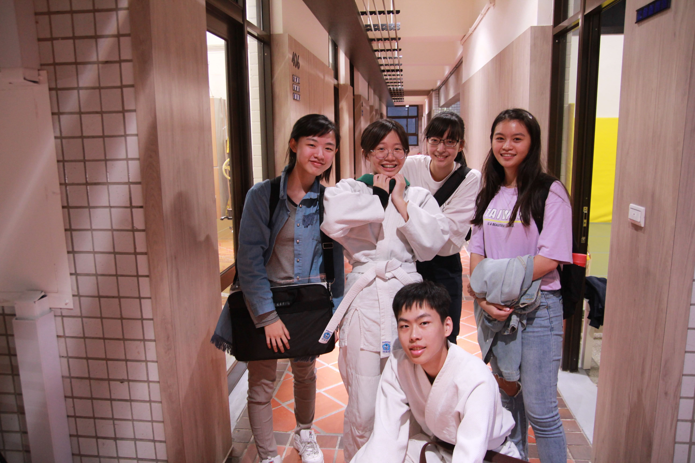

專案 2019.9  企業概論－方舟蛋捲義賣 這堂課不僅訓練我們團隊間溝通的默契， 更是在考驗我們的時間分配能力， 「從做中學」是這堂課的宗旨，在一次又一次的實踐中， 我們釐清了現實的殘酷，也了解到了行銷的不易。  2020.4  管理學－食物包大作戰 第一次參與食物包的活動，一開始我們到了瑪潮清點食物包，並且學長姐向我們解釋了一整個流程。 到了關懷者家後，學姊很熱絡的向關懷者噓寒問暖， 了解一下關懷者的近況與問題，而我們就站在一旁默默學習， 學習該如何以較溫暖的語氣向關懷者說話， 讓他們不會感到自卑或彆扭。盡己所能，微小的力量也能成為一股暖流，希望我們的關懷能為他們的生活注入生機。 2020.10  多媒體程式設計－行銷合氣道 才剛學習了HTML以及CSS不久，我們就需在短短不到3個禮拜的時間完成一個完整的網頁， 不得不說這對於我來說是個非常困難的任務，但值得慶幸的是： 這項艱鉅的任務並不是只須我一人獨力完成， 而是有一個團隊分工共同達成目標！因這次的專案， 我了解到：其實在程式相關的課程中， 大多數的知識並不是源自於老師，老師僅是幫我們奠下基礎，更多應用都需要我們自行查詢並應用。 雖然時間很緊湊，但生活卻充實了許多，這個學習的機會十分難得！